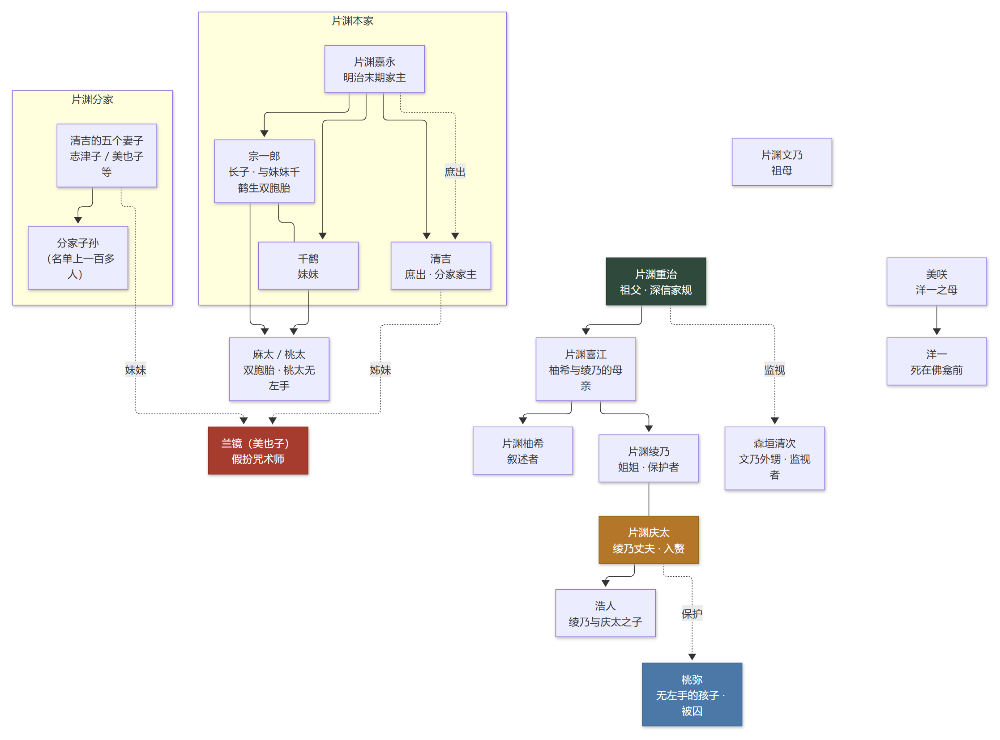
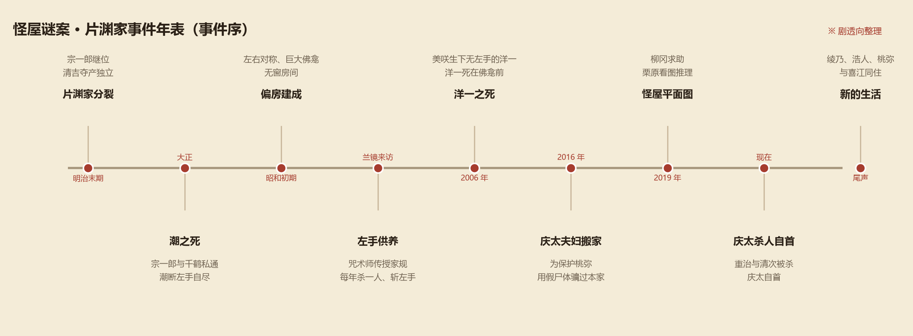

怪屋谜案
変な家 · 雨穴（Uketsu） · 平面图推理
朋友的婚房，户型图上有一间「没有窗户的儿童房」，还有一块进不去的神秘空间。 建筑师栗原只看了一眼图，就说：这房子是为了杀人建的。 一张图，牵出一个家族几十年不敢见光的「家规」。
01作品档案
| 书名 | 怪屋谜案（変な家） |
|---|---|
| 作者 | 雨穴（Uketsu），日本怪谈/悬疑作者 |
| 中文版 | 台海出版社 · 磨铁（烨伊 译），2023 年 7 月，ISBN 9787516835616 |
| 类型 | 平面图推理 / 悬疑 / 家族秘史 / 都市怪谈 |
| 结构 | 四章：怪屋 / 扭曲的平面图 / 记忆中的平面图 / 被束缚的家 |
| 一句话 | 一张户型图，藏着一个家族几十年的「左手供养」。 |
这本书的特别之处在于：它把「看图」本身变成了推理。没有尸体、没有密室、没有名侦探， 只有几张平面图，和两个对着图说话的人——一个写怪谈的笔者，一个懂建筑的栗原。 但就在这些线条和标注里，藏着一整套可怕的仪式。
02怪屋与家规
第一间怪屋
柳冈要买的那栋二手房，看上去很正常，但平面图上有几处说不通的地方： 二层儿童房一扇窗户都没有，进门要绕过双重门，厕所只能从儿童房进； 一层厨房和客厅之间，还有一块没有门的神秘空间。 栗原指出：这些墙是「为了这块空间」特意砌的，而这间儿童房，像一间单人牢房。
第二、第三间怪屋
故事随后带出另外两张平面图：一张「扭曲的平面图」，和片渊柚希凭记忆画下的 祖父家老宅——左右完全对称，走廊尽头是一尊巨大的佛龛，右侧四间和室全都没有窗户， 其中一间和隔壁房间之间的拉门，怎么拽也拽不开。
「左手供养」
片渊家有一条流传了几代的家规，叫作「左手供养」： 家里若生出没有左手的孩子，就把他关进不见阳光的暗室抚养； 孩子十岁起，每年要杀掉一个「片渊清吉的血脉」，斩下对方的左手，供在潮的佛龛前； 哥哥或姐姐担任「保护者」，辅助孩子完成；仪式一直持续到孩子十三岁。
一、片渊家子无左手者，养于暗室。
二、无左手者足十岁，杀片渊清吉血脉，亦断其左手。
三、龛前置断手，奉潮。 —— 书中抄录的「左手供养」家规
03登场人物
- 笔者——自由撰稿人，专写超自然题材；全书的第一人称叙述者。
- 栗原——大型建筑事务所的设计师，爱看恐怖小说与推理；看图推理的「侦探」。
- 柳冈——出版公司销售，买了第一套房，带来第一张「怪屋」平面图。
- 片渊柚希——本书第三位委托人，凭儿时记忆画出祖父家的平面图。
- 片渊喜江——柚希与绫乃的母亲，知道片渊家最多秘密的人。
- 片渊绫乃——柚希的姐姐，被送去片渊家当「保护者」。
- 片渊庆太——绫乃的丈夫，入赘片渊家，为了救妻子和孩子布了一个大骗局。
- 桃弥——生来没有左手的孩子，被关在暗室里长大。
- 浩人——绫乃与庆太的儿子，桃弥的「弟弟」。
- 片渊重治 / 文乃——柚希的祖父与祖母，深深相信「左手供养」。
- 片渊美咲 / 洋一——美咲是洋一的母亲；洋一死在佛龛前，是整本书的转折点。
- 森垣清次——文乃的外甥，受重治之命监视庆太一家。
- 兰镜（美也子）——自称咒术师的女人，真正的身份是清吉二夫人的妹妹。
- 潮 / 宗一郎 / 千鹤 / 清吉 / 嘉永——片渊家上一代的恩怨：庶出、近亲、断手、夺产。

04案件年表

这本书的时间线拉得很长：从明治末期片渊家的分裂、潮的断手自尽，到昭和初期偏房建成、 兰镜带来「左手供养」，再到 2006 年洋一之死、2016 年庆太夫妇搬家、2019 年柳冈求助， 最后停在庆太的自首与尾声。一张张平面图，就是这条时间线的化石。
05真相
⚠ 点开查看剧透：左手供养、兰镜的算计与庆太的骗局
「怪屋」为什么怪
没有窗户的儿童房，是关无左手孩子的暗室；一层的「神秘空间」，是连接儿童房与浴室的 暗道——为了不让外人看见这个孩子；巨大的佛龛，用来供奉斩下来的断手。 房子不是碰巧长成这样，它是照着「左手供养」的规矩建的。
兰镜的真正目的
「左手供养」不是祖上传下来的诅咒，而是一场借刀杀人：清吉的二夫人志津子 为了让自己儿子继承家业，让妹妹美也子假扮咒术师「兰镜」，骗宗一郎说潮的怨灵在作祟， 必须让无左手的孩子去杀清吉血脉的孩子、砍断左手供奉。 于是本家成了分家内斗的屠刀。
重治与庆太
重治（柚希的祖父）从小被灌输家规，深信不疑。美咲生下无左手的桃弥后，被囚禁、 被迫生下孩子；桃弥被关在暗室里长大，原该由哥哥洋一当「保护者」， 但洋一死了——而洋一之死，其实是柚希的父亲为了「保护家人」动的手。
绫乃被送去当保护者，与庆太结婚。庆太不愿杀人，用一具偶然发现的尸体（宫江恭一） 的左手冒充「仪式成果」，骗过了片渊家；直到尸体被发现、重治逼上门， 庆太杀了重治与清次，随后自首。他在信里把妻儿托付给了喜江。
尾声的疑点
绫乃、浩人、桃弥与喜江一起生活，柚希也重新走进了姐姐的世界。可栗原最后提出一个 让人不舒服的猜想：喜江身上流着分家的血，她的外婆弥生是清吉的第七个孩子； 名单是谁交给重治的？美咲为什么在被囚禁前一天刚好给喜江打了电话？ 重治又是从哪儿看到埼玉的报纸的？——这些「巧合」，也许都是喜江布的局。 书没有给出答案，留给了读者。
06诡计解剖
⚠ 点开查看剧透：用一张图讲完的推理
1. 平面图即证词
全书最核心的推理对象不是人，而是平面图：墙的位置、门的朝向、窗户的缺失、 走廊的绕行——每一个「不合常理」的细节，都是建造者意图的证词。 栗原的推理，就是把这些异常翻译成「人做过什么」。
2. 空间即仪式
无窗儿童房 = 暗室；一层神秘空间 = 暗道；佛龛 = 供奉断手的地方； 儿童房与浴室相连的暗道 = 让被囚禁的孩子「不经过走廊」去洗澡。 整套「左手供养」，被写进了房子的结构里。
3. 家规的漏洞
仪式要求每年杀一人、直到十三岁，那应该是四个人；可名单上明确死了三个， 第四个呢？栗原由此推出「杀婴」的可能，也把矛头指向了分家内部的权力斗争。
4. 叙述者的局限
笔者只是写稿人，他看到的、听到的、转述的，都是别人愿意让他知道的； 栗原的推理再精彩，也只是「看图说话」。结尾把怀疑交给读者，正是这本书最冷的一笔。
5. 都市怪谈与真事
书里提到的「杀人代理」网站、暗网委托，是现实里出现过的都市传说； 恐怖感不来自鬼神，而来自「这种事也许真的发生过」。
07名场面与评价
《怪屋谜案》是雨穴的代表作，也是「平面图推理」这一类型的标杆：不靠血腥， 只靠几张图就把读者按在椅子上。它的续作《怪屋谜案 2》（変な家 2）延续了同样的写法。
这本书最妙的地方，是它给了读者一种「我也能看图推理」的参与感—— 你会在阅读时自己拿笔在图上比划，然后被栗原的下一句话推翻。
- 适合：喜欢建筑/平面图推理、都市怪谈、短篇快节奏的读者。
- 不适合：追求复杂本格谜题、长篇幅人物塑造的读者。
- 阅读建议：看的时候把平面图画下来（书里也有），自己先推一遍再看答案。
08参考资料
- 雨穴《怪屋谜案》（変な家），台海出版社·磨铁，烨伊 译，2023 年 7 月。
- 本页为二次创作解说，情节概述与观点以原作与公开资料为准；如与原文有出入，以原作小说为准。